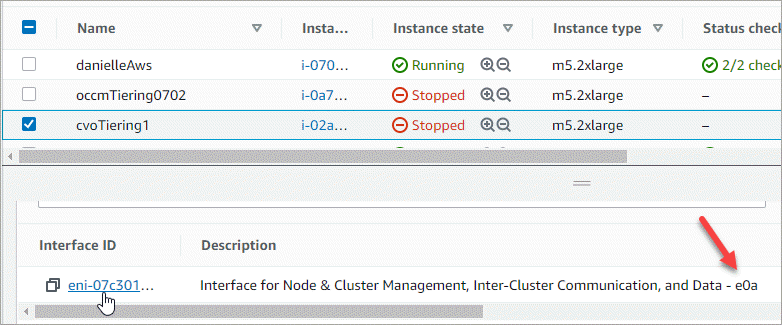

Notas de la versión
Notas de la versión
Cree máquinas virtuales de almacenamiento de servicio de datos para Cloud Volumes ONTAP en AWS
 Sugerir cambios
Sugerir cambios
- Número admitido de máquinas virtuales de almacenamiento
- Verifique los límites de su configuración
- Asigne direcciones IP en AWS
- Cree una máquina virtual de almacenamiento en un sistema de un único nodo
- Cree un equipo virtual de almacenamiento en un par de alta disponibilidad en un único entorno de disponibilidad
- Crear una máquina virtual de almacenamiento en un par de alta disponibilidad en varios AZs
Una máquina virtual de almacenamiento es un equipo virtual que se ejecuta en ONTAP y proporciona servicios de datos y almacenamiento a sus clientes. Puede que lo sepa como un SVM o un vserver. Cloud Volumes ONTAP se configura con una máquina virtual de almacenamiento de forma predeterminada, pero algunas configuraciones admiten máquinas virtuales de almacenamiento adicionales.
Para crear máquinas virtuales de almacenamiento con servicio de datos adicionales, debe asignar direcciones IP en AWS y, después, ejecutar comandos de la ONTAP según su configuración de Cloud Volumes ONTAP.
Número admitido de máquinas virtuales de almacenamiento
Se admiten varias máquinas virtuales de almacenamiento con configuraciones de Cloud Volumes ONTAP específicas a partir de la versión 9.7. Vaya a la "Notas de la versión de Cloud Volumes ONTAP" Para verificar el número admitido de máquinas virtuales de almacenamiento para la versión de Cloud Volumes ONTAP.
Todas las demás configuraciones de Cloud Volumes ONTAP admiten un equipo virtual de almacenamiento que sirve datos y un equipo virtual de almacenamiento de destino utilizado para la recuperación ante desastres. Puede activar la máquina virtual de almacenamiento de destino para acceder a los datos si se produce una interrupción en la máquina virtual de almacenamiento de origen.
Verifique los límites de su configuración
Cada instancia de EC2 admite un número máximo de direcciones IPv4 privadas por interfaz de red. Es necesario verificar el límite antes de asignar las direcciones IP en AWS para la máquina virtual de almacenamiento nueva.
-
Vaya al "Sección Storage Limits en las notas de la versión de Cloud Volumes ONTAP".
-
Identificar el número máximo de direcciones IP por interfaz para el tipo de instancia.
-
Tenga en cuenta este número porque lo necesitará en la siguiente sección al asignar direcciones IP en AWS.
Asigne direcciones IP en AWS
Antes de crear LIF para la nueva máquina virtual de almacenamiento, deben asignarse direcciones IPv4 privadas al puerto e0a en AWS.
Tenga en cuenta que un LIF de gestión opcional para un equipo virtual de almacenamiento requiere una dirección IP privada en un sistema de nodo único y en un par de alta disponibilidad en un único nodo AZ. Esta LIF de gestión proporciona una conexión con herramientas de gestión como SnapCenter.
-
Inicie sesión en AWS y abra el servicio EC2.
-
Seleccione la instancia de Cloud Volumes ONTAP y haga clic en redes.
Si va a crear una máquina virtual de almacenamiento en un par de alta disponibilidad, seleccione el nodo 1.
-
Desplácese hasta interfaces de red y haga clic en ID de interfaz para el puerto e0a.

-
Seleccione la interfaz de red y haga clic en acciones > Administrar direcciones IP.
-
Expanda la lista de direcciones IP de e0a.
-
Compruebe las direcciones IP:
-
Cuente el número de direcciones IP asignadas para confirmar que el puerto tiene espacio para IP adicionales.
En la sección anterior de esta página, es necesario haber identificado el número máximo de direcciones IP compatibles por interfaz.
-
Opcional: Vaya a la CLI para Cloud Volumes ONTAP y ejecute interfaz de red show para confirmar que cada una de estas direcciones IP está en uso.
Si no se está utilizando una dirección IP, puede usarla con el nuevo equipo virtual de almacenamiento.
-
-
De nuevo en la consola de AWS, haga clic en asignar nueva dirección IP para asignar direcciones IP adicionales en función de la cantidad que necesite para el nuevo equipo virtual de almacenamiento.
-
Sistema de un solo nodo: Se necesita una IP privada secundaria sin usar.
Se requiere una IP privada secundaria opcional si desea crear una LIF de gestión en el equipo virtual de almacenamiento.
-
Par DE ALTA DISPONIBILIDAD en una única zona de disponibilidad: Se requiere una IP privada secundaria sin utilizar en el nodo 1.
Se requiere una IP privada secundaria opcional si desea crear una LIF de gestión en el equipo virtual de almacenamiento.
-
Par DE ALTA DISPONIBILIDAD en varios AZs: Se requiere una IP privada secundaria no utilizada en cada nodo.
-
-
Si va a asignar la dirección IP en un par ha en un solo AZ, habilite permitir la reasignación de direcciones IPv4 privadas secundarias.
-
Haga clic en Guardar.
-
Si tiene un par de alta disponibilidad en varios AZs, deberá repetir estos pasos para el nodo 2.
Cree una máquina virtual de almacenamiento en un sistema de un único nodo
Estos pasos crean una nueva máquina virtual de almacenamiento en un sistema de nodo único. Se necesita una dirección IP privada para crear un LIF NAS y se necesita otra dirección IP privada opcional para crear un LIF de gestión.
-
Cree la máquina virtual de almacenamiento y un recorrido hacia la máquina virtual de almacenamiento.
vserver create -rootvolume-security-style unix -rootvolume root_svm_2 -snapshot-policy default -vserver svm_2 -aggregate aggr1network route create -destination 0.0.0.0/0 -vserver svm_2 -gateway subnet_gateway -
Cree una LIF NAS.
network interface create -auto-revert true -vserver svm_2 -service-policy default-data-files -home-port e0a -address private_ip_x -netmask node1Mask -lif ip_nas_2 -home-node cvo-nodeDonde private_ip_x es una IP privada secundaria no utilizada en e0a.
-
Opcional: Cree una LIF de gestión de máquinas virtuales de almacenamiento.
network interface create -auto-revert true -vserver svm_2 -service-policy default-management -home-port e0a -address private_ip_y -netmask node1Mask -lif ip_svm_mgmt_2 -home-node cvo-nodeDonde private_ip_y es otra IP privada secundaria no utilizada en e0a.
-
Asigne uno o varios agregados a la máquina virtual de almacenamiento.
vserver add-aggregates -vserver svm_2 -aggregates aggr1,aggr2Este paso es necesario porque el nuevo equipo virtual de almacenamiento necesita acceder al menos a un agregado para poder crear volúmenes en el equipo virtual de almacenamiento.
Cree un equipo virtual de almacenamiento en un par de alta disponibilidad en un único entorno de disponibilidad
Estos pasos crean un nuevo equipo virtual de almacenamiento en un par de alta disponibilidad en una única zona de disponibilidad. Se necesita una dirección IP privada para crear un LIF NAS y se necesita otra dirección IP privada opcional para crear un LIF de gestión.
Estos dos LIF se asignan en el nodo 1. Si se produce un fallo, las direcciones IP privadas pueden moverse entre los nodos.
-
Cree la máquina virtual de almacenamiento y un recorrido hacia la máquina virtual de almacenamiento.
vserver create -rootvolume-security-style unix -rootvolume root_svm_2 -snapshot-policy default -vserver svm_2 -aggregate aggr1network route create -destination 0.0.0.0/0 -vserver svm_2 -gateway subnet_gateway -
Cree una LIF NAS en el nodo 1.
network interface create -auto-revert true -vserver svm_2 -service-policy default-data-files -home-port e0a -address private_ip_x -netmask node1Mask -lif ip_nas_2 -home-node cvo-node1Donde private_ip_x es una IP privada secundaria sin utilizar en e0a de cvo-1. Esta dirección IP puede reubicarse en el e0a de cvo-2 en caso de toma de control, ya que los archivos de datos predeterminados de la política de servicio indican que las IP pueden migrar al nodo asociado.
-
Opcional: Cree una LIF de gestión de máquinas virtuales de almacenamiento en el nodo 1.
network interface create -auto-revert true -vserver svm_2 -service-policy default-management -home-port e0a -address private_ip_y -netmask node1Mask -lif ip_svm_mgmt_2 -home-node cvo-node1Donde private_ip_y es otra IP privada secundaria no utilizada en e0a.
-
Asigne uno o varios agregados a la máquina virtual de almacenamiento.
vserver add-aggregates -vserver svm_2 -aggregates aggr1,aggr2Este paso es necesario porque el nuevo equipo virtual de almacenamiento necesita acceder al menos a un agregado para poder crear volúmenes en el equipo virtual de almacenamiento.
-
Si ejecuta Cloud Volumes ONTAP 9.11.1 o una versión posterior, modifique las políticas de servicio de red para la máquina virtual de almacenamiento.
La modificación de los servicios es necesaria porque garantiza que Cloud Volumes ONTAP pueda utilizar la LIF iSCSI para conexiones de gestión externas.
network interface service-policy remove-service -vserver <svm-name> -policy default-data-files -service data-fpolicy-client network interface service-policy remove-service -vserver <svm-name> -policy default-data-files -service management-ad-client network interface service-policy remove-service -vserver <svm-name> -policy default-data-files -service management-dns-client network interface service-policy remove-service -vserver <svm-name> -policy default-data-files -service management-ldap-client network interface service-policy remove-service -vserver <svm-name> -policy default-data-files -service management-nis-client network interface service-policy add-service -vserver <svm-name> -policy default-data-blocks -service data-fpolicy-client network interface service-policy add-service -vserver <svm-name> -policy default-data-blocks -service management-ad-client network interface service-policy add-service -vserver <svm-name> -policy default-data-blocks -service management-dns-client network interface service-policy add-service -vserver <svm-name> -policy default-data-blocks -service management-ldap-client network interface service-policy add-service -vserver <svm-name> -policy default-data-blocks -service management-nis-client network interface service-policy add-service -vserver <svm-name> -policy default-data-iscsi -service data-fpolicy-client network interface service-policy add-service -vserver <svm-name> -policy default-data-iscsi -service management-ad-client network interface service-policy add-service -vserver <svm-name> -policy default-data-iscsi -service management-dns-client network interface service-policy add-service -vserver <svm-name> -policy default-data-iscsi -service management-ldap-client network interface service-policy add-service -vserver <svm-name> -policy default-data-iscsi -service management-nis-client
Crear una máquina virtual de almacenamiento en un par de alta disponibilidad en varios AZs
Estos pasos crean una nueva máquina virtual de almacenamiento en un par de alta disponibilidad en múltiples AZs.
Se requiere una dirección IP flotante para un LIF NAS y es opcional para un LIF de gestión. Estas direcciones IP flotantes no requieren que asigne direcciones IP privadas en AWS. En su lugar, las IP flotantes se configuran automáticamente en la tabla de rutas de AWS para que señalen a la ENI de un nodo específico en el mismo VPC.
Para que las IP flotantes funcionen con ONTAP, se debe configurar una dirección IP privada en cada máquina virtual de almacenamiento en cada nodo. Esto se refleja en los pasos siguientes en los que se crea un LIF iSCSI en el nodo 1 y en el nodo 2.
-
Cree la máquina virtual de almacenamiento y un recorrido hacia la máquina virtual de almacenamiento.
vserver create -rootvolume-security-style unix -rootvolume root_svm_2 -snapshot-policy default -vserver svm_2 -aggregate aggr1network route create -destination 0.0.0.0/0 -vserver svm_2 -gateway subnet_gateway -
Cree una LIF NAS en el nodo 1.
network interface create -auto-revert true -vserver svm_2 -service-policy default-data-files -home-port e0a -address floating_ip -netmask node1Mask -lif ip_nas_floating_2 -home-node cvo-node1-
La dirección IP flotante debe estar fuera de los bloques CIDR para todas las VPC de la región AWS en la que se debe implementar la configuración de alta disponibilidad. 192.168.209.27 es un ejemplo de dirección IP flotante. "Obtenga más información sobre la elección de una dirección IP flotante".
-
-service-policy default-data-filesIndica que las IP pueden migrar al nodo del partner.
-
-
Opcional: Cree una LIF de gestión de máquinas virtuales de almacenamiento en el nodo 1.
network interface create -auto-revert true -vserver svm_2 -service-policy default-management -home-port e0a -address floating_ip -netmask node1Mask -lif ip_svm_mgmt_2 -home-node cvo-node1 -
Cree una LIF iSCSI en el nodo 1.
network interface create -vserver svm_2 -service-policy default-data-blocks -home-port e0a -address private_ip -netmask nodei1Mask -lif ip_node1_iscsi_2 -home-node cvo-node1-
Este LIF iSCSI es necesario para admitir la migración LIF de las IP flotantes en el equipo virtual de almacenamiento. No es necesario ser un LIF iSCSI, pero no se puede configurar para migrar entre nodos.
-
-service-policy default-data-blockIndica que una dirección IP no migra entre nodos. -
Private_ip es una dirección IP privada secundaria no utilizada en eth0 (e0a) de cvo_1.
-
-
Cree una LIF iSCSI en el nodo 2.
network interface create -vserver svm_2 -service-policy default-data-blocks -home-port e0a -address private_ip -netmaskNode2Mask -lif ip_node2_iscsi_2 -home-node cvo-node2-
Este LIF iSCSI es necesario para admitir la migración LIF de las IP flotantes en el equipo virtual de almacenamiento. No es necesario ser un LIF iSCSI, pero no se puede configurar para migrar entre nodos.
-
-service-policy default-data-blockIndica que una dirección IP no migra entre nodos. -
Private_ip es una dirección IP privada secundaria no utilizada en eth0 (e0a) de cvo_2.
-
-
Asigne uno o varios agregados a la máquina virtual de almacenamiento.
vserver add-aggregates -vserver svm_2 -aggregates aggr1,aggr2Este paso es necesario porque el nuevo equipo virtual de almacenamiento necesita acceder al menos a un agregado para poder crear volúmenes en el equipo virtual de almacenamiento.
-
Si ejecuta Cloud Volumes ONTAP 9.11.1 o una versión posterior, modifique las políticas de servicio de red para la máquina virtual de almacenamiento.
La modificación de los servicios es necesaria porque garantiza que Cloud Volumes ONTAP pueda utilizar la LIF iSCSI para conexiones de gestión externas.
network interface service-policy remove-service -vserver <svm-name> -policy default-data-files -service data-fpolicy-client network interface service-policy remove-service -vserver <svm-name> -policy default-data-files -service management-ad-client network interface service-policy remove-service -vserver <svm-name> -policy default-data-files -service management-dns-client network interface service-policy remove-service -vserver <svm-name> -policy default-data-files -service management-ldap-client network interface service-policy remove-service -vserver <svm-name> -policy default-data-files -service management-nis-client network interface service-policy add-service -vserver <svm-name> -policy default-data-blocks -service data-fpolicy-client network interface service-policy add-service -vserver <svm-name> -policy default-data-blocks -service management-ad-client network interface service-policy add-service -vserver <svm-name> -policy default-data-blocks -service management-dns-client network interface service-policy add-service -vserver <svm-name> -policy default-data-blocks -service management-ldap-client network interface service-policy add-service -vserver <svm-name> -policy default-data-blocks -service management-nis-client network interface service-policy add-service -vserver <svm-name> -policy default-data-iscsi -service data-fpolicy-client network interface service-policy add-service -vserver <svm-name> -policy default-data-iscsi -service management-ad-client network interface service-policy add-service -vserver <svm-name> -policy default-data-iscsi -service management-dns-client network interface service-policy add-service -vserver <svm-name> -policy default-data-iscsi -service management-ldap-client network interface service-policy add-service -vserver <svm-name> -policy default-data-iscsi -service management-nis-client